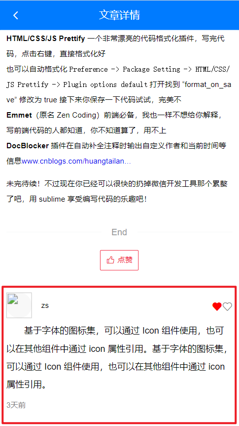
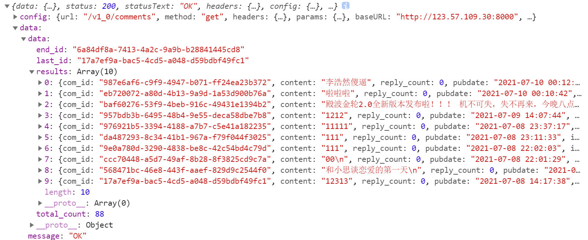
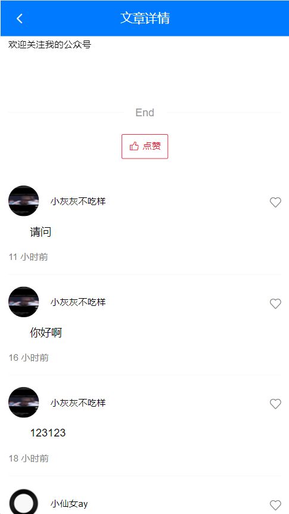
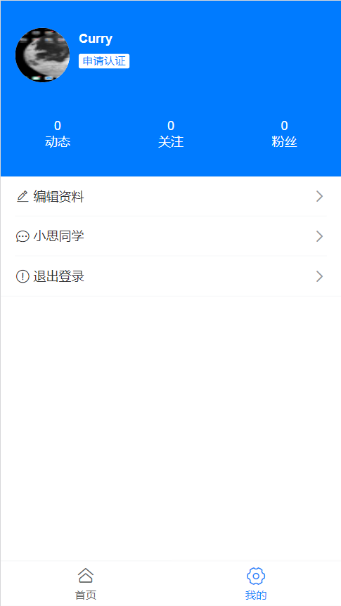
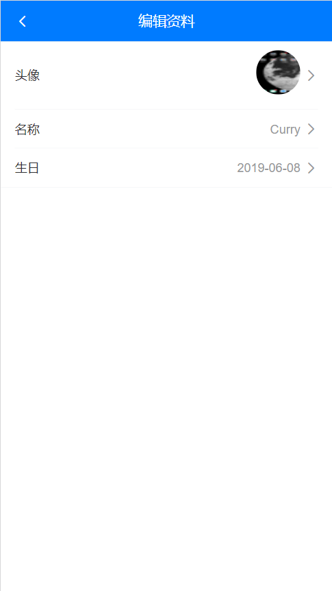

Day05_文章评论-个人中心
# 1.文章评论_组件创建
# 目标
创建文章评论组件
在文章详情页显示

# 步骤
ArticleDetail/CommentList.vue - 定义评论组件(复制标签和样式, 然后对比)
<template> <div> <!-- 评论列表 --> <div class="cmt-list"> <!-- 评论的 Item 项 --> <div class="cmt-item"> <!-- 头部区域 --> <div class="cmt-header"> <!-- 头部左侧 --> <div class="cmt-header-left"> <img src="" alt="" class="avatar"> <span class="uname">zs</span> </div> <!-- 头部右侧 --> <div class="cmt-header-right"> <van-icon name="like" size="16" color="red" /> <van-icon name="like-o" size="16" color="gray" /> </div> </div> <!-- 主体区域 --> <div class="cmt-body"> 基于字体的图标集，可以通过 Icon 组件使用，也可以在其他组件中通过 icon 属性引用。基于字体的图标集，可以通过 Icon 组件使用，也可以在其他组件中通过 icon 属性引用。 </div> <!-- 尾部区域 --> <div class="cmt-footer">3天前</div> </div> </div> </div> </template> <script> export default { } </script> <style scoped lang="less"> .cmt-list { padding: 10px; .cmt-item { padding: 15px 0; + .cmt-item { border-top: 1px solid #f8f8f8; } .cmt-header { display: flex; align-items: center; justify-content: space-between; .cmt-header-left { display: flex; align-items: center; .avatar { width: 40px; height: 40px; background-color: #f8f8f8; border-radius: 50%; margin-right: 15px; } .uname { font-size: 12px; } } } .cmt-body { font-size: 14px; line-height: 28px; text-indent: 2em; margin-top: 6px; word-break: break-all; } .cmt-footer { font-size: 12px; color: gray; margin-top: 10px; } } } </style>引入到ArticleDetail.vue里使用后查看效果
<template> <div> <!-- Header 区域 --> <!-- 文章信息区域 --> <!-- 文章评论区域 --> <CommentList></CommentList> </div> </template> <script> import CommentList from './CommentList.vue' export default { // ... components: { CommentList } } </script>
# 小结
- 明确需求, 完成标签样式创建
- 引入到文章详情页面使用
# 2.文章评论_获取评论数据
# 目标
查找接口, 拿到评论数据

# 步骤
定义接口方法
// 评论 - 获取列表 // offset第一页时, 不用在params携带(axios发现值为null会自动忽略此参数) export const commentListAPI = ({ artId, offset = null, limit = 10 }) => { return request({ url: '/v1_0/comments', params: { type: 'a', source: artId, offset, limit } }) }CommentList.vue中, 引入发请求, 拿数据
import { commentListAPI } from '@/api' export default { async created () { this.getCommentListFn() }, methods: { async getCommentListFn () { const res = await commentListAPI({ artId: this.$route.query.aid }) console.log(res) } } }
# 小结
可选参数也先预留着
axios库中params里的值为null, 会自动忽略此参数和值, 不发给后台
默认第一页offset不用传递
# 3.文章评论_铺设评论数据
# 目标
评论数据, 铺设到页面上

# 步骤
JSON解析数据, 保存到data变量中
export default { data () { return { commentList: [] // 评论数据 } }, async created () { this.getCommentListFn() }, methods: { async getCommentListFn () { const res = await commentListAPI({ artId: this.$route.query.aid }) this.commentList = res.data.data.resuts // 保存到变量中 } } }CommentList.vue中修改标签的内容 - 循环数据
<template> <div> <!-- 评论列表 --> <div class="cmt-list"> <!-- 评论的 Item 项 --> <div class="cmt-item" v-for="obj in commentList" :key="obj.com_id"> <!-- 头部区域 --> <div class="cmt-header"> <!-- 头部左侧 --> <div class="cmt-header-left"> <img :src="obj.aut_photo" class="avatar"> <span class="uname">{{ obj.aut_name }}</span> </div> <!-- 头部右侧 --> <div class="cmt-header-right"> <van-icon name="like" size="16" color="red" v-if="obj.is_liking === true"/> <van-icon name="like-o" size="16" color="gray" v-else/> </div> </div> <!-- 主体区域 --> <div class="cmt-body"> {{ obj.content }} </div> <!-- 尾部区域 --> <div class="cmt-footer">{{ timeAgo(obj.pubdate) }}</div> </div> </div> </div> </template> <script> import { timeAgo } from '@/utils/date' export default { methods: { timeAgo // ... } } </script>
# 小结
- 把数据保存到vue实例上
- 用vue实例数组循环标签替换数据
- 引入时间处理方法, 处理时间
# 4.文章评论_评论点亮
# 目标
先实现前端点亮效果
调用对应接口即可

# 步骤
绑定点击事件, 实现前端点亮评论效果
<!-- 头部右侧 --> <div class="cmt-header-right"> <van-icon name="like" size="16" color="red" v-if="obj.is_liking === true" @click="loveFn(true, obj)"/> <van-icon name="like-o" size="16" color="gray" v-else @click="loveFn(false, obj)"/> </div> <script> export default { // ... methods: { // ... loveFn (bool, obj) { if (bool === true) { // 点了红心 // 业务 => 取消红心 // 调接口 => 取消红心 // 显示 => 灰心 obj.is_liking = false } else { // 点了灰心 // 业务 => 点亮红心 // 调接口 => 点亮红心 // 显示 => 红心 obj.is_liking = true } } } } </script>定义接口方法
// 评论 - 喜欢 export const commentLikingAPI = ({ comId }) => { return request({ url: '/v1_0/comment/likings', method: 'POST', data: { target: comId } }) } // 评论-取消喜欢 export const commentDisLikingAPI = ({ comId }) => { return request({ url: `/v1_0/comment/likings/${comId}`, method: 'DELETE' }) }在逻辑判断中, 分别调用
import { commentLikingAPI, commentDisLikingAPI } from '@/api' export default { // ... methods: { // ... async loveFn (bool, obj) { if (bool === true) { // 点了红心 // 业务 => 取消红心 // 调接口 => 取消红心 // 显示 => 灰心 obj.is_liking = false await commentDisLikingAPI({ comId: obj.com_id }) } else { // 点了灰心 // 业务 => 点亮红心 // 调接口 => 点亮红心 // 显示 => 红心 obj.is_liking = true await commentLikingAPI({ comId: obj.com_id }) } } } }点亮/取消后, 刷新网页看状态是否保留
调用接口成功, 后端数据更新, 刷新网页重新拿到此评论状态
# 小结
- 先写前端交互效果, 顺清逻辑
- 再判断中分别调用接口, 刷新测试
# 5.文章评论_发布结构和切换
# 目标
发布评论, 标签结构准备
显示评论和发布评论容器切换

# 步骤
在CommentList.vue底部 - 准备标签和样式
<!-- 底部添加评论区域 - 1 --> <div class="add-cmt-box van-hairline--top"> <van-icon name="arrow-left" size="0.48rem" @click="$router.back()" /> <div class="ipt-cmt-div">发表评论</div> <div class="icon-box"> <van-badge> <van-icon name="comment-o" size="0.53333334rem" /> </van-badge> <van-icon name="star-o" size="0.53333334rem" /> <van-icon name="share-o" size="0.53333334rem" /> </div> </div> <!-- 底部添加评论区域 - 2 --> <div class="cmt-box van-hairline--top"> <textarea placeholder="友善评论、理性发言、阳光心灵"></textarea> <van-button type="default" disabled>发布</van-button> </div>对class修饰
/*美化 - 文章详情 - 底部的评论页面 */ // 外层容器 .art-cmt-container-1 { padding-bottom: 46px; } .art-cmt-container-2 { padding-bottom: 80px; } // 发布评论的盒子 - 1 .add-cmt-box { position: fixed; bottom: 0; left: 0; width: 100%; box-sizing: border-box; background-color: white; display: flex; justify-content: space-between; align-items: center; height: 46px; line-height: 46px; padding-left: 10px; .ipt-cmt-div { flex: 1; border: 1px solid #efefef; border-radius: 15px; height: 30px; font-size: 12px; line-height: 30px; padding-left: 15px; margin-left: 10px; background-color: #f8f8f8; } .icon-box { width: 40%; display: flex; justify-content: space-evenly; line-height: 0; } } .child { width: 20px; height: 20px; background: #f2f3f5; } // 发布评论的盒子 - 2 .cmt-box { position: fixed; bottom: 0; left: 0; width: 100%; height: 80px; display: flex; justify-content: space-between; align-items: center; font-size: 12px; padding-left: 10px; box-sizing: border-box; background-color: white; textarea { flex: 1; height: 66%; border: 1px solid #efefef; background-color: #f8f8f8; resize: none; border-radius: 6px; padding: 5px; } .van-button { height: 100%; border: none; } }data声明变量, isShowCmtInput: false, 控制textarea是否应该出现
控制标签
<!-- 底部添加评论区域 - 1 --> <div class="add-cmt-box van-hairline--top" v-if="isShowCmtInput === false"> <!-- 底部添加评论区域 - 2 --> <div class="cmt-box van-hairline--top" v-else>给发布评论标签绑定点击事件
<div class="ipt-cmt-div" @click="isShowCmtInput = true">发表评论</div>使用自定义指令fofo, 让输入框自动聚焦, 并修改自定义指令代码
判断指令所在的标签
import Vue from 'vue' // 插件对象(必须有install方法, 才可以注入到Vue.use中) export default { install () { Vue.directive('fofo', { inserted (el) { if (el.nodeName === 'INPUT' || el.nodeName === 'TEXTAREA') { // 如果直接是input标签/textarea标签 el.focus() } else { // 指令在van-search组件身上, 获取的是组件根标签div, 而input在标签内 const inp = el.querySelector('input') const textArea = el.querySelector('textarea') // 如果找到了 if (inp || textArea) { inp && inp.focus() textArea && textArea.focus() } else { // 本身也不是, 子标签里也没有 console.error('请把v-fofo用在输入框标签上') } } } }) } }给输入框使用, 自动聚焦指令
<textarea v-fofo placeholder="友善评论、理性发言、阳光心灵"></textarea>失去焦点, 让发布评论div关闭
<textarea v-fofo placeholder="友善评论、理性发言、阳光心灵" @blur="isShowCmtInput = false"></textarea>给评论列表外层容器动态设置类名-距离底部
防止底部输入框, 挡住隔壁的内容
<!-- 评论列表 --> <div class="cmt-list" :class="isShowCmtInput ? 'art-cmt-container-2' : 'art-cmt-container-1'" >
# 小结
- 看设计图, 完成评论部分2套标签结构和样式
- 点击实现切换效果
- 底部出现要让隔壁的内容, 下边距也切换
# 6.文章评论_评论数量和滑动
# 目标
设置微标数量提示
- 无评论, 什么都不显示
- 有评论, 显示总数
点击评论微标滚动

# 步骤
收集评论总数, 显示
max: 超出这个数量, 就显示max的数字+
<van-badge :content="totalCount" :max="99"> <van-icon name="comment-o" size="0.53333334rem" /> </van-badge> <script> export default { data () { return { commentList: [], isShowCmtInput: false, totalCount: '' // 评论总数 } }, async created () { this.getCommentListFn() }, methods: { // 获取评论列表 async getCommentListFn () { const res = await commentListAPI({ artId: this.$route.query.aid }) this.commentList = res.data.data.results this.totalCount = res.data.data.total_count || '' // 如果无评论数(0), 给空字符串(防止0微标出现) } } } </script>获取到点赞容器, 调用原生DOM特有方法
让点赞滚动到最上面
// 评论滑动 async moveFn () { // 真实DOM都在document(所以不再一个vue文件内), 也是可以获取的 document.querySelector('.like-box').scrollIntoView({ behavior: 'smooth' }) }
# 小结
- scrollIntoView作用是让调用者标签滑动到视口区域底部
# 7.文章评论_发布评论(上午结束)
# 目标
先实现前端效果
点击发布按钮, 拿到输入框内容
再调用接口, 发布评论

# 步骤
根据内容, 动态设置发布按钮禁用状态
<textarea v-fofo v-model="comValue" placeholder="友善评论、理性发言、阳光心灵" @blur="isShowCmtInput = false"> </textarea> <van-button type="default" :disabled="comValue.length === 0">发布</van-button> <script> export default { data () { return { comValue: '' // 评论内容 } } } </script>点击发布按钮, 打印内容
问题: 先失去焦点了, 而且你用v-if, DOM移除, 点击事件未来的及触发
解决: 失去焦点, 延时执行
<textarea v-fofo v-model="comValue" placeholder="友善评论、理性发言、阳光心灵" @blur="blurFn"></textarea> <van-button type="default" :disabled="comValue.length === 0" @click="send">发布</van-button> <script> methods: { // 发布评论框 - 失去焦点 blurFn () { setTimeout(() => { this.isShowCmtInput = false }) }, // 发布评论 async send () { console.log(this.comValue) } } </script>定义接口方法
// 评论 - 发布 export const sendCommentAPI = ({ artId, content }) => { return request({ url: '/v1_0/comments', method: 'POST', data: { target: artId, content: content } }) }发布事件, 调用接口传给后台
- 同时数组新增评论对象
- 评论总数+1
- 输入框内容清空
// 发布评论 async send () { const res = await sendCommentAPI({ artId: this.$route.query.aid, content: this.comValue }) // 保存新评论对象到数组中 this.commentList.unshift(res.data.data.new_obj) // 数量+1 this.totalCount++ // 成功后, 清除输入框内容 this.comValue = '' }
# 小结
- 先实现前端点击发布拿到评论内容
- 调用接口, 想下成功后业务实现
- 新评论对象加到数组中
- 总评论数量增加1
- 清空评论输入框内容
# 8.文章评论_获取更多
# 目标
获取下一页评论数据

# 步骤
van-list套住评论列表区域
- 定义相关变量和方法
- 距离底部50像素, 判定为触底
- 默认上来不检测触底事件
<van-list v-model="loading" :finished="finished" finished-text="没有更多了" @load="onLoad" offset="50" :immediate-check="false" > <!-- 评论的 Item 项 --> <div class="cmt-item" v-for="obj in commentList" :key="obj.com_id"> <!-- 头部区域 --> <div class="cmt-header"> <!-- 头部左侧 --> <div class="cmt-header-left"> <img :src="obj.aut_photo" class="avatar" /> <span class="uname">{{ obj.aut_name }}</span> </div> <!-- 头部右侧 --> <div class="cmt-header-right"> <van-icon name="like" size="16" color="red" v-if="obj.is_liking === true" @click="loveFn(true, obj)" /> <van-icon name="like-o" size="16" color="gray" v-else @click="loveFn(false, obj)" /> </div> </div> <!-- 主体区域 --> <div class="cmt-body"> {{ obj.content }} </div> <!-- 尾部区域 --> <div class="cmt-footer">{{ timeAgo(obj.pubdate) }}</div> </div> </van-list> <script> export default { data () { return { // ... loading: false, // 底部加载状态 finished: false // 底部是否加载完成 } }, methods: { // ... // 加载更多 onLoad () { } } } </script>准备: data变量offset, 接口请求后, 保存分页要传的offset
来自上一次接口返回的last_id值, 做分页
export default { data () { return { offset: null // 下一页(偏移id), 一定初始值null(第一页不需要传, axios遇到null忽略此参数) } }, methods: { async getCommentListFn () { const res = await commentListAPI({ artId: this.$route.query.aid, offset: this.offset // 把offset偏移量带给后台 }) this.commentList = res.data.data.results this.totalCount = res.data.data.total_count || '' this.offset = res.data.data.last_id // 保存起来为了做分页 } } }准备: 在onLoad函数触发, 调用请求评论列表方法
- 把新数据和旧数据合并
- 关闭loading加载状态(置false), 下次触底如果loading为false, van-list组件才会再执行load事件
- 判断如果没有数据了, 把finished(置true), 代表加载完成, van-list组件不会再执行load事件
export default { methods: { // 获取评论列表 async getCommentListFn () { const res = await commentListAPI({ artId: this.$route.query.aid, offset: this.offset // 把offset偏移量带给后台 }) // 判断是否还有数据 if (res.data.data.results.length === 0) { this.finished = true } this.commentList = [...this.commentList, ...res.data.data.results] // 合并数据 this.totalCount = res.data.data.total_count || '' // 如果无评论数(0), 给空字符串(防止0微标出现) this.offset = res.data.data.last_id // 保存起来为了做分页 // 关闭加载状态 this.loading = false }, // 加载更多 onLoad () { this.getCommentListFn() } } }
# 小结
- 分页是如何做的?
- 第一次offset传null, 不要给后台传递offset参数(axios如果params参数遇到值为null, 自动忽略这对key+value)
- 第一次请求成功把last_id保存起来, 这样第二次请求last_id有值, offset带给后台, 拿到下一页数据
- 第二次请求成功的last_id再更新保存起来, 为第三次请求下一页做准备
- .....
# 9.个人中心_组件和数据
# 目标
个人中心标签样式和数据

# 步骤
User/index.vue页面, 复制标签结构和样式
<template> <div class="user-container"> <!-- 用户基本信息面板 --> <div class="user-card"> <!-- 用户头像、姓名 --> <van-cell> <!-- 使用 title 插槽来自定义标题 --> <template #icon> <img src="" alt="" class="avatar"> </template> <template #title> <span class="username">用户名</span> </template> <template #label> <van-tag color="#fff" text-color="#007bff">申请认证</van-tag> </template> </van-cell> <!-- 动态、关注、粉丝 --> <div class="user-data"> <div class="user-data-item"> <span>0</span> <span>动态</span> </div> <div class="user-data-item"> <span>0</span> <span>关注</span> </div> <div class="user-data-item"> <span>0</span> <span>粉丝</span> </div> </div> </div> <!-- 操作面板 --> <van-cell-group class="action-card"> <van-cell icon="edit" title="编辑资料" is-link /> <van-cell icon="chat-o" title="小思同学" is-link /> <van-cell icon="warning-o" title="退出登录" is-link /> </van-cell-group> </div> </template> <script> export default { } </script> <style scoped lang="less"> .user-container { .user-card { background-color: #007bff; color: white; padding-top: 20px; .van-cell { background: #007bff; color: white; &::after { display: none; } .avatar { width: 60px; height: 60px; background-color: #fff; border-radius: 50%; margin-right: 10px; } .username { font-size: 14px; font-weight: bold; } } } .user-data { display: flex; justify-content: space-evenly; align-items: center; font-size: 14px; padding: 30px 0; .user-data-item { display: flex; flex-direction: column; justify-content: center; align-items: center; width: 33.33%; } } } </style>注册用到的Vant内Tag组件
import { Tag, CellGroup } from 'vant' Vue.use(CellGroup) Vue.use(Tag)定义接口方法
// 用户 - 基本资料 export const userInfoAPI = () => { return request({ url: '/v1_0/user' }) }在User/index.vue页面使用-获取数据-铺设到标签上
<template> <div class="user-container"> <!-- 用户基本信息面板 --> <div class="user-card"> <!-- 用户头像、姓名 --> <van-cell> <!-- 使用 title 插槽来自定义标题 --> <template #icon> <img :src="user.photo" alt="" class="avatar"> </template> <template #title> <span class="username">{{ user.name }}</span> </template> <template #label> <van-tag color="#fff" text-color="#007bff">申请认证</van-tag> </template> </van-cell> <!-- 动态、关注、粉丝 --> <div class="user-data"> <div class="user-data-item"> <span>{{ user.art_count }}</span> <span>动态</span> </div> <div class="user-data-item"> <span>{{ user.follow_count }}</span> <span>关注</span> </div> <div class="user-data-item"> <span>{{ user.fans_count }}</span> <span>粉丝</span> </div> </div> </div> </div> </template> <script> import { userInfoAPI } from '@/api' export default { data () { return { user: {} // 用户对象 } }, async created () { const res = await userInfoAPI() console.log(res) this.user = res.data.data } } </script>
# 小结
- 铺设组件标签
- 请求数据, 保存到data变量上, 才能在vue模板标签上直接用
# 10.个人中心_退出登录
# 目标
实现退出登录功能
给用户一个确认提示

# 步骤
给退出登录按钮绑定点击事件
<!-- 操作面板 --> <van-cell-group class="action-card"> <van-cell icon="edit" title="编辑资料" is-link /> <van-cell icon="chat-o" title="小思同学" is-link /> <van-cell icon="warning-o" title="退出登录" is-link @click="quit"/> </van-cell-group> <script> export default { methods: { quit () { } } } </script>引入vant的Dialog, 然后当用户点击退出给用户提示, 用户选择确定时, 退出
import { mapMutations } from 'vuex' import { Dialog } from 'vant' export default { methods: { ...mapMutations(['setToken']), quit () { Dialog.confirm({ title: '提示', message: '这就走了?不爱我了吗?' }).then(() => { // 清空vuex和本地 this.setToken('') // 跳到登录页 this.$router.replace('/login') }).catch(() => { // on cancel }) } } }
# 小结
- Dialog.confirm函数在原地返回的是什么?
- Promise对象
# 11.个人中心_编辑信息页面
# 目标
编辑信息页面创建和路由设置

# 步骤
新建User/UserEdit.vue文件, 编辑用户信息页面文件, 准备标签和样式
<template> <div class="user-edit-container"> <!-- Header 区域 --> <van-nav-bar title="编辑资料" left-arrow @click-left="$router.back()" fixed /> <!-- 用户资料 --> <van-cell-group class="action-card"> <van-cell title="头像" is-link center> <template #default> <van-image round class="avatar" src=""/> </template> </van-cell> <van-cell title="名称" is-link /> <van-cell title="生日" is-link /> </van-cell-group> </div> </template> <script> export default { name: 'UserEdit' } </script> <style lang="less" scoped> .user-edit-container { padding-top: 46px; .avatar { width: 50px; height: 50px; } } </style>注册需要的van-image组件
import { Image } from 'vant' Vue.use(Image)在router/index.js - 添加编辑页面路由
import UserEditor from '@/views/User/UserEdit' { path: '/user_editor', component: UserEditor }点击编辑选项单元格, 跳转路由
<van-cell icon="edit" title="编辑资料" is-link to="/user_editor"/>
# 小结
- 编辑用户信息页面创建和路由配置
- van-cell身上的to / 点击事件 实现跳转路由效果
# 12.个人中心_编辑信息铺设
# 目标
编辑信息页面数据铺设

# 步骤
定义接口方法
// 用户- 个人资料(就为了获取生日) export const userProfileAPI = () => { return request({ url: '/v1_0/user/profile' }) }触发网络请求拿到数据后, 渲染基础数据展示
<template> <div class="user-edit-container"> <!-- Header 区域 --> <van-nav-bar title="编辑资料" left-arrow @click-left="$router.back()" fixed /> <!-- 用户资料 --> <van-cell-group class="action-card"> <van-cell title="头像" is-link center> <template #default> <van-image round class="avatar" :src="profile.photo" /> </template> </van-cell> <van-cell title="名称" is-link :value="profile.name" /> <van-cell title="生日" is-link :value="profile.birthday" /> </van-cell-group> </div> </template> <script> import { userProfileAPI } from '@/api' export default { name: 'UserEdit', data () { return { profile: {} // 用户基本资料 } }, async created () { const res = await userProfileAPI() console.log(res) this.profile = res.data.data } } </script>
# 小结
- 拿到数据接口请求
- 铺设页面替换
# 13.个人中心_头像修改
# 目标
- 点击头像出现文件选择器
- 获取文件对象
- 上传图片文件对象, 表单给后台
移花接木: 点击图片, js模拟点击了input[type=file]标签出现选择图片窗口

# 步骤
先实现前端点击获取文件对象效果
<van-cell title="头像" is-link center> <template #default> <van-image round class="avatar" :src="profile.photo" @click="$refs.iptFile.click()"/> <!-- file 选择框 --> <input type="file" ref="iptFile" v-show="false" accept="image/*" @change="onFileChange" /> </template> </van-cell> <script> export default { methods: { // 文件选择方法 onFileChange (ev) { console.log(ev.target.files[0]) } } } </script>接口定义
// 用户- 更新头像 // 注意: formObj的值必须是一个表单对象 // '{"a": 10, "b": 20}' // 对象格式的JSON字符串 // new FormData() // 表单对象 export const updatePhotoAPI = (formObj) => { return request({ url: '/v1_0/user/photo', method: 'PATCH', data: formObj // 如果你的请求体内容是表单对象, 浏览器会自动携带请求头Content-Type为multipart/form-data }) }引入接口, 传入表单对象, 更新页面
import { updatePhotoAPI } from '@/api' export default { methods: { // 文件选择方法 async onFileChange (ev) { // console.log(ev.target.files[0]) if (ev.target.files.length === 0) return // 防止用户未选择图片 const fd = new FormData() fd.append('photo', ev.target.files[0]) // photo在表单里参数名携带 const res = await updatePhotoAPI(fd) console.log(res) this.profile.photo = res.data.data.photo // 更新最新头像 } } }
# 小结
- 什么是表单隐藏域?
- 给用户看A标签, 点击A标签
- JS代码监测A点击事件, 触发B标签标签的事件
- 前端如何创建表单对象?
- new FormData
# 14.个人中心_姓名修改-准备
# 目标
点击弹出, 姓名输入框
填入默认值, 自动聚焦
效果如下

# 步骤
目标: 弹出输入框, 然后确定或者取消修改
dialog全局注册, 然后在UserEdit.vue这个页面使用 - 准备弹出输入框层
import { Dialog } from 'vant' Vue.use(Dialog)<!-- 姓名部分 --> <van-cell title="名称" is-link :value="profile.name" @click="showNameDialogFn" /> <!-- 修改用户名称的对话框 --> <van-dialog v-model="isShowNameDialog" title="修改名称" show-cancel-button :before-close="onNameDialogBeforeClose"> <!-- 输入框 --> <van-field v-model.trim="userName" input-align="center" maxlength="7" placeholder="请输入名称" v-fofo /> </van-dialog> <script> export default { data () { return { isShowNameDialog: false, // 是否显示姓名弹出框 userName: '' // 编辑用户名 } }, methods: { // 点击名字-出现弹出框 showNameDialogFn () { this.isShowNameDialog = true this.userName = this.profile.name // 设置默认显示内容 }, // 姓名修改弹出层-关闭前方法 onNameDialogBeforeClose (action, done) { } } } </script>
# 15.个人中心_姓名修改-验证
# 目标
姓名校验
永远不要相信用户在输入框, 输入的内容, 防止注入攻击
- 1-7位中英文数字组合
- 不通过, 弹窗不关闭, 给个提示
- 通过, 弹窗关闭, 调用接口
效果如下

# 步骤
在弹窗关闭方法里判断
// 姓名修改弹出层-关闭前方法 async onNameDialogBeforeClose (action, done) { // action的值: confirm或cancel(点击按钮区分) if (action === 'confirm') { // 确定 // unicode编码 \u4092 // url编码 %E2%C3%D1 if (/^[A-Za-z0-9\u4e00-\u9fa5]{1,7}$/.test(this.userName)) { // 通过校验 // 调用接口 // 更新页面显示的名字 // 关闭弹窗 done() } else { // 提示用户 Notify({ type: 'warning', message: '用户名中英文和数字1-7位' }) // 阻止弹窗关闭 done(false) } } else if (action === 'cancel') { // 取消 done() } }定义接口方法
// 用户 - 更新资料 export const updateProfileAPI = ({ birthday, userName }) => { return request({ url: '/v1_0/user/profile', method: 'PATCH', data: { birthday: birthday, name: userName } }) }在通过校验位置, 调用接口更新
import { updateProfileAPI } from '@/api' if (/^[A-Za-z0-9\u4e00-\u9fa5]{1,7}$/.test(this.userName)) { // 通过校验 // 调用接口 await updateProfileAPI({ userName: this.userName }) // 更新页面显示的名字 this.profileObj.name = this.userName // 关闭弹窗 done() }
# 小结
- 在关闭弹窗前, 用vant组件方法判断
- 用正则判断符合规则就调用接口关闭弹窗
- 用正则判断不符合规则就提示用户, 阻止弹窗关闭
# 16.个人中心_生日修改-准备
# 目标
找到dateTimePiker选择时间组件

# 步骤
注册DataTimePicker组件
import { DatetimePicker } from 'vant' Vue.use(DatetimePicker)在UserEdit.vue页面使用, 定义相关变量
<!-- 修改时间 --> <van-popup v-model="isShowBirth" position="bottom" style="height: 50%" round> <!-- 日期选择控件 --> <van-datetime-picker v-model="currentDate" type="date" title="选择出生日期" :min-date="minDate" :max-date="maxDate" :show-toolbar="true" /> </van-popup> <script> export default { data () { return { // ... isShowBirth: false, // 显示时间选择器 minDate: new Date(1900, 0, 1), // 最小的可选的日期 maxDate: new Date(), // 最大的可选日期 currentDate: new Date() // 当前日期 } }, } </script>点击单元格, 弹出时间选择组件
<van-cell title="生日" is-link :value="profile.birthday" @click="isShowBirth = true"/>
# 小结
- popup和dateTimePicker组件结合使用
- 除了用popup也可以用actionSheet组件
# 17.个人中心_生日修改-使用
# 目标
监测取消和确定按钮事件
分别实现功能

# 步骤
绑定事件, 实现功能
<!-- 修改时间 --> <van-popup v-model="isShowBirth" position="bottom" style="height: 50%" round> <!-- 日期选择控件 --> <van-datetime-picker v-model="currentDate" type="date" title="选择出生日期" :min-date="minDate" :max-date="maxDate" :show-toolbar="true" @cancel="isShowBirth = false" @confirm="confirmFn"/> </van-popup> <script> import moment from 'moment' export default { methods: { // 弹出时间选择框 showBirthFn () { this.isShowBirth = true this.currentDate = new Date(this.profile.birthday) // 设置data组件默认显示时间 }, // 时间选择 async confirmFn () { // console.log(this.currentDate instanceof Date) // this.currentDate里值是日期对象 // 但是后台要"年-月-日"格式字符串参数值 console.log(this.currentDate) const dateStr = moment(this.currentDate).format('YYYY-MM-DD') await updateProfileAPI({ birthday: dateStr }) // 前端页面同步 this.profile.birthday = dateStr // 时间选择器关闭 this.isShowBirth = false } } } </script>
# 小结
- 组件需要日期对象, new Date
- 后台需要日期字符串, "年-月-日"格式
- 单元格里显示"年-月-日"格式